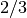
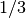
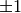
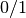
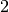
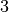

Basic Classification¶
The demo shown in this tutorial can be obtained by running pyGPs/Demo/demo_GPC.py.
Load data¶
First, we import the data:
# GPC target class are +1 and -1
demoData = np.load('data_for_demo/classification_data.npz')
x = demoData['x'] # training data
y = demoData['y'] # training target
z = demoData['xstar'] # test data
The data points were generated from two Gaussians with different means and covariances. One Gaussian is isotropic and contains  of the data (blue), the other is highly correlated and contains  of the points (red). Note, that the labels for the targets are specified to be  (and not ).
In the plot, we superimpose the data points with the posterior equi-probability contour lines for the probability of the second class given complete information about the generating mechanism.

First example  state default values¶
state default values¶
Again, lets see the simplest use of gp classification at first
model = gp.GPC() # binary classification (default inference method: EP)
model.fit(x, y) # fit default model (mean zero & rbf kernel) with data
model.train(x, y) # optimize hyperparamters (default optimizer: single run minimize)
model.predict(z) # predict test cases
Note, that inference is done via expectation propagation (EP) approximation by deault. How to set inference to Laplace approximation, see A bit more things you can do.
Second example GP classification¶
So we first state the model to be  classification now:
classification now:
model = gp.GPC()
The rest is similar to GPR:
k = cov.RBFard(log_ell_list=[0.05,0.17], log_sigma=1.)
model.setPrior(kernel=k)
model.setData(x, y)
model.plotData_2d(x1,x2,t1,t2,p1,p2)
model.fit()
model.train()
model.predict(z, ys=np.ones((z.shape[0],1)))
[Theory] In this example, we used an RBF kernel (squared exponential covariance function) with automatic relevance determination (ARD). This covariance function has one characteristic length-scale parameter for each dimension of the input space (here  in total), and a signal magnitude parameter, resulting in a total of  hyperparameters. ARD with separate length-scales for each input dimension is a very powerful tool to learn which inputs are important for the predictions: if length-scales are short, input dimensions are very important, and when they grow very large (compared to the spread of the data), the corresponding input dimensions will be mostly ignored.
Note, GPC.plot() is a toy method for 2-d data:
model.plot(x1,x2,t1,t2)
The contour plot for the predictive distribution is shown below. Note, that the predictive probability is fairly close to the probabilities of the generating process in regions of high data density. Note also, that as you move away from the data, the probability approaches , the overall class probability.

Examining the two ARD characteristic length-scale parameters after learning, you will find that they are fairly similar, reflecting the fact that for this data set, both input dimensions are important.
A bit more things you can do¶
GPC uses expectation propagation (EP) inference and Error function likelihood by default, you can explictly change to other methods:
model.useInference("Laplace")
model.useLikelihood("Logistic")